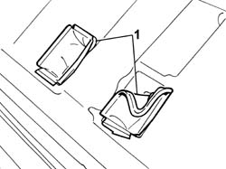
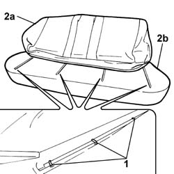

7050D20 Rear seat CUSHION COVER - R.R.
- Path
- Procedures > 70 FITTINGS > 7050 REAR SEATS > 7050D REAR SEAT COVERS/UPHOLSTERY > 7050D20 Rear seat CUSHION COVER - R.R.
- Kind
- repair procedure (removal / refitting; the operation number is the code)
- Applies to
- all engines; all production periods
- Interactive page
- https://sloeber94.github.io/elrnDB-fPnd/en/#/2753294
Applies to: all engines; all production periods
 Removing
Removing
 Refitting
Refitting7040B10 load platform (luggage platform) trim - r+r
7050A20 one-piece rear seat cushion - r r
7050A56 rear seat cushion ribbing - r r
1. Move the seat belt handle housing trim towards the front.

Applies to: all engines; all production periods
1. Lift up the left or right section of the cover and cut the fastening clips.
Continue cutting the centre clips fastening the cushion cover to the upholstery.
2. Separate the cushion (2a) from the upholstery (2b).

Applies to: all engines; all production periods
Refitting
RemovingCheck that the cover is intact and that there are no signs of wear or cuts.
Fit the trim to the padding.
Using the special pliers, attach the new clips in the centre section where the cover is joined to the upholstery.
 | Name | Country |
|---|---|---|
- | Pliers for metal points | 1.878.017.001 |
Continue attaching the clips in the outer areas.
Fit the cover in the two housings for the seat belt handles.
7050A56 rear seat cushion ribbing - r r
7050A20 one-piece rear seat cushion - r r